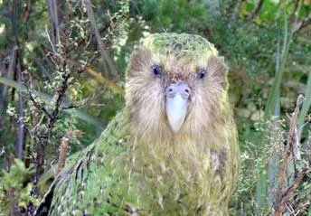

Kakapo
Critically Endangered
Estimated remaining: 238 individuals
Habitat
Predator-free islands off New Zealand: Codfish Island, Anchor Island, and Little Barrier Island.
Threats
- Predation by introduced mammals (stoats, rats, cats)
- Infertility and genetic bottlenecks
- Habitat loss and disease
Conservation efforts
Kakapo Recovery Program uses GPS tracking, artificial insemination, and predator-proof sanctuaries. The population has doubled since 2016 thanks to intensive monitoring and community support.